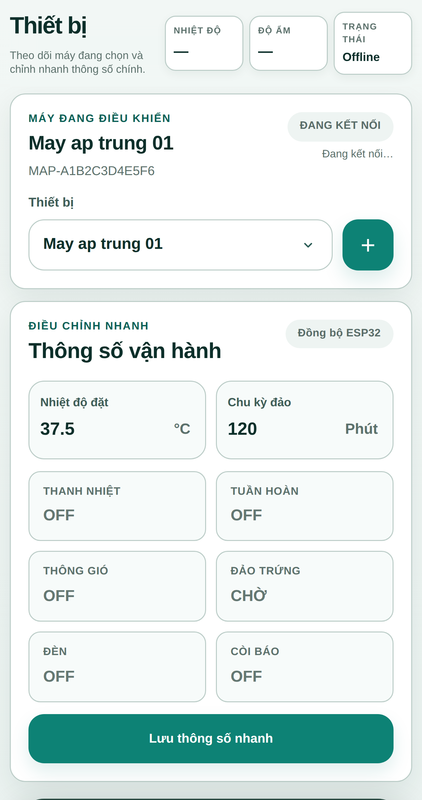
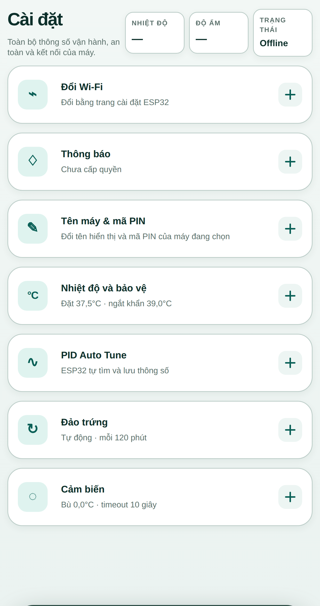
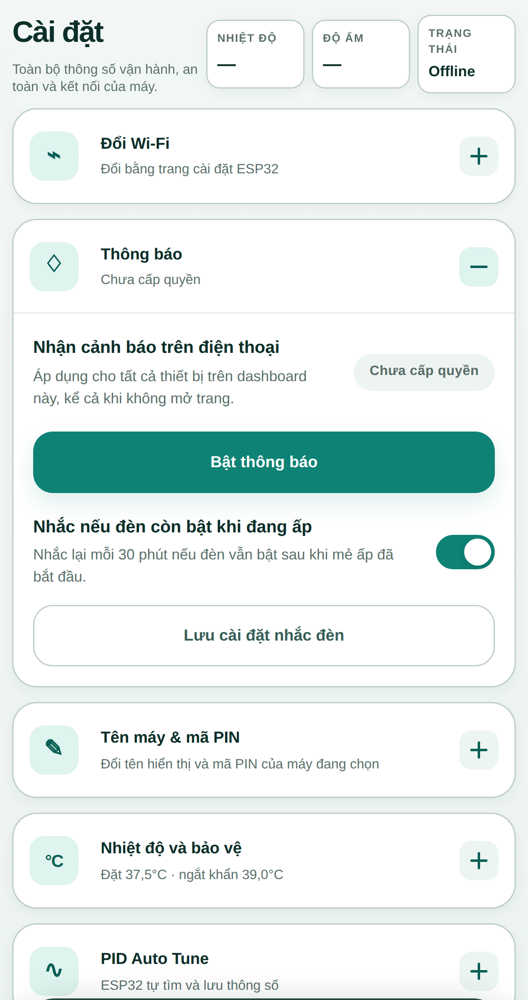
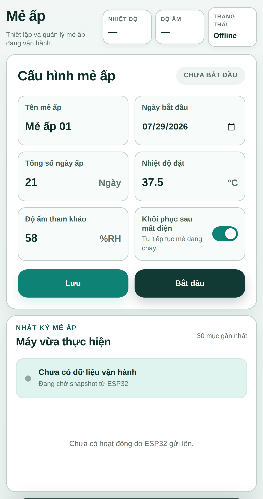

Số trang trong mục lục đã được cập nhật khớp với bản PDF cuối cùng (Rev. 1.0).
Tài liệu này hướng dẫn vận hành, theo dõi và xử lý sự cố cơ bản cho máy ấp trứng công nghiệp MAYAP INDUSTRIAL, dựa trên đúng hành vi của firmware điều khiển (v3.4.0) và firmware HMI (v3.6.0) đang chạy trên thiết bị.
Vận hành AUTO/MANUAL, thao tác trên HMI và Web, quản lý mẻ ấp, đọc và xử lý mã lỗi (E-code), các cơ chế tự phục hồi đã xác nhận trong firmware, và ranh giới rõ ràng giữa việc người vận hành được tự xử lý và việc bắt buộc phải gọi kỹ thuật.
| Ký hiệu | Ý nghĩa |
|---|---|
| BÌNH THƯỜNG | Trạng thái vận hành bình thường, không cần thao tác. |
| CẢNH BÁO | Cần chú ý/theo dõi, máy có thể vẫn tiếp tục vận hành. |
| LỖI (STOP) | Máy tự khoá một phần chức năng để bảo vệ an toàn. |
| KHẨN CẤP | Mức nghiêm trọng nhất, hệ thống cắt nhiệt ngay lập tức. |
| 🔧 / KỸ THUẬT VIÊN | Chỉ kỹ thuật viên được xử lý, người vận hành không tự ý can thiệp. |
machine_control.h, hmi.h,
network_service.h, realtime_link.h, cloud_alert_link.h,
config.h, app.js, index.html) và đối chiếu với tài liệu audit
audit/OPERATION_RECOVERY_MANUAL.md. Nội dung nào không tìm thấy bằng chứng trong code được
ghi rõ là CHƯA XÁC NHẬN thay vì suy đoán.Xem bảng đầy đủ tại Phần 17. Nguyên tắc chung: nếu đã thực hiện đúng các bước "Người vận hành làm" trong Fault Card (Phần 12) mà mã lỗi vẫn còn, hoặc mã lỗi thuộc nhóm 301/303/304/314/205 (khi Test Mode cũng thất bại) → luôn gọi kỹ thuật, không tự xử lý thêm.
Máy gồm tủ điều khiển (chứa HMI, công tắc vận hành) gắn trên buồng ấp trứng.
Sơ đồ dưới đây minh hoạ vị trí các bộ phận người vận hành cần biết, dựng lại theo
đúng danh sách input/output đã xác nhận trong firmware (InputChannel,
machine_control.h) — KHÔNG phải ảnh chụp thiết bị thật.
| Số | Bộ phận | Chức năng |
|---|---|---|
| ① | Màn hình LCD | Hiển thị nhiệt độ, độ ẩm, trạng thái mẻ ấp, cảnh báo/mã lỗi |
| ② | Nút xoay (rotary) | Di chuyển menu, chọn mục, xác nhận (ACK), chỉnh giá trị |
| ③ | Công tắc AUTO/MANUAL | Công tắc vật lý — gạt để chuyển giữa 2 chế độ vận hành |
| ④ | Công tắc tay (Heater/Fan/Light/Turn L-R) | Chỉ có tác dụng khi đang ở MANUAL — điều khiển trực tiếp từng thiết bị |
| ⑤ | Đèn báo / còi báo | Sáng/kêu khi có cảnh báo cần chú ý |
| ⑥ | Cảm biến nhiệt độ/độ ẩm | Đầu dò gắn trong buồng ấp, truyền dữ liệu qua RS485 |
| ⑦ | Công tắc hành trình (2 cái) | Giới hạn hành trình đảo trứng 2 chiều trái/phải |
| ⑧ | Khay/dàn đảo trứng | Được động cơ đảo theo chu kỳ đã cài đặt khi ở AUTO |
Toàn bộ tên màn hình dưới đây lấy trực tiếp từ enum class View và các
hàm draw*() trong hmi.h — không có màn hình nào được thêm ngoài
danh sách này.
mapCommandAction() trong realtime_link.h — chỉ ánh xạ 5 lệnh: batch_start,
batch_stop, resume_yes, resume_no, autotune_start.Giao diện web (dùng được trên điện thoại/máy tính khi máy đang bật chế độ kết
nối Online) chỉ hoạt động qua 2 kênh dữ liệu MQTT xác nhận trong
realtime_link.h: config/set (lưu cấu hình) và
command (5 lệnh cố định). Ảnh dưới đây là ảnh chụp thật từ chính mã
nguồn giao diện trong repository.

batch_start), Dừng mẻ ấp (batch_stop).resume_yes / resume_no).autotune_start).config/set.

Người vận hành cần thấy: nhiệt độ/độ ẩm hiển thị số thực, giờ đúng thực tế, không có cảnh báo nào đang treo trên màn hình Alarm.
Máy tự động giữ nhiệt độ/độ ẩm theo cài đặt, tự đảo trứng theo chu kỳ đã hẹn, và tự phát cảnh báo khi có bất thường — không cần thao tác tay liên tục.
Sau khi đã hoàn tất checklist "Trước khi bật máy" (Phần 6) và đã cài đặt xong nhiệt độ/độ ẩm mục tiêu, chu kỳ đảo, số ngày ấp dự kiến.
| Điều kiện | Thông báo nếu chưa đạt |
|---|---|
| Công tắc đang ở AUTO | "HAY CHUYEN SANG AUTO" |
Cảm biến đang có dữ liệu tin cậy (sensorUsable_) | "CAM BIEN CHUA SAN SANG" |
RTC đang hợp lệ (rtc_.valid()) | "RTC CHUA HOP LE" |
Điều khiển tay từng thiết bị (nhiệt, quạt, đèn, đảo) khi cần can thiệp trực tiếp: vệ sinh, kiểm tra, hiệu chỉnh cơ khí.
Khi bảo trì/kiểm tra thiết bị, hoặc khi KHÔNG đang trong một mẻ ấp cần vận hành tự động hoàn toàn.
Ở MANUAL, các công tắc vật lý sau có tác dụng trực tiếp (xác nhận từ
InputChannel: Heater, Fan, Light, TurnLeft, TurnRight):
| Công tắc | Điều khiển |
|---|---|
| Heater | Cho phép/không cho phép nhiệt hoạt động |
| Fan | Quạt tuần hoàn |
| Light | Đèn buồng ấp |
| Turn Left / Turn Right | Đảo trứng theo chiều tương ứng (đè tay, không theo chu kỳ tự động) |
| Trạng thái hiện tại | Thao tác | Điều kiện | Kết quả |
|---|---|---|---|
| AUTO (đang chạy mẻ) | Gạt sang MANUAL | Không có điều kiện chặn phần cứng — công tắc luôn gạt được | Cảnh báo 133, khoá đảo trứng, vẫn giữ điều khiển nhiệt |
| MANUAL | Gạt sang AUTO | Đang có mẻ chờ "Áp lại" (resume) mà công tắc AUTO đang tắt | Báo 132 — CAN CHUYEN SANG AUTO, không tự áp lại mẻ cho tới khi gạt sang AUTO |
| MANUAL | Gạt sang AUTO | Bình thường (không có mẻ chờ áp lại) | Vào AUTO ngay, tiếp tục/bắt đầu điều khiển tự động |
Nếu gạt công tắc mà máy không phản ứng ngay: đợi vài trăm mili-giây (thời gian chống dội công tắc/debounce phần cứng) rồi kiểm tra lại màn hình.

Thực hiện trên HMI (menu CAI DAT ME → xác nhận) hoặc Web (nút bắt đầu mẻ, gửi
lệnh batch_start). Phải thoả các điều kiện tại Phần 7 (AUTO, cảm biến
sẵn sàng, RTC hợp lệ).
Thực hiện trên HMI hoặc Web (batch_stop). Khi dừng, firmware ghi lại
trạng thái "đã dừng" vào bộ nhớ an toàn nội bộ (NVS) TRƯỚC khi cập nhật EEPROM —
nếu mất điện đúng lúc đang dừng, máy sẽ KHÔNG tự áp lại mẻ đã có lệnh dừng dở dang
(xem mã lỗi 313).
Nếu máy mất điện thật sự giữa mẻ, khi có điện lại:
resume_yes) hoặc
Huỷ (resume_no) trên HMI hoặc Web.Giải thích bằng ngôn ngữ vận hành — chi tiết kỹ thuật đầy đủ nằm ở Phần 18 và Phần 20.
| Tình huống | Máy tự làm gì? | Người vận hành cần làm gì? |
|---|---|---|
| Màn hình LCD mất tạm thời | Tự dò lại kết nối mỗi 3 giây, tự bật lại khi tìm thấy | Chờ; nếu quá vài phút vẫn tối → gọi kỹ thuật |
| Mất cảm biến nhiệt/ẩm | Tự thử đọc lại liên tục, tự nhận lại khi có dữ liệu tốt ổn định | Kiểm tra dây RS485/đầu dò nếu kéo dài |
| EEPROM (bộ nhớ cấu hình) lỗi tạm thời | Tự thử kết nối lại mỗi 3 giây, tự khôi phục cấu hình khi module ổn định trở lại | Theo dõi; nếu chuyển thành "MAT EEPROM" (301) → gọi kỹ thuật |
| Đồng hồ RTC báo sai/mất giờ | Có thể tự sửa giờ nếu ESP32 chưa từng mất điện gần đó (dựa vào đồng hồ nội bộ) | Kiểm tra lại giờ hiển thị; nếu vẫn sai → chỉnh giờ thủ công hoặc gọi kỹ thuật |
| Mất Wi-Fi / mất kết nối Web | Tự kết nối lại liên tục (không bao giờ ngừng thử) | Không cần dừng máy — nhiệt độ/độ ẩm/đảo trứng vẫn hoạt động độc lập với mạng |
| Lỗi đảo trứng lặp lại (hành trình/timeout) | Khoá đảo, chờ xác nhận (ACK) | Kiểm tra cơ khí, ACK trên HMI sau khi kiểm tra |
| Lỗi đảo trứng lặp lại 3 lần liên tiếp không thành công | Khoá đảo hoàn toàn (205), không nhận ACK thường | Dừng mẻ, vào Test Mode xác nhận cả 2 công tắc hành trình |
Mỗi thẻ trả lời đúng 7 câu: lỗi gì — ở đâu — nguyên nhân — firmware đã tự làm gì — máy đang ở trạng thái nào — người vận hành làm gì — khi nào gọi kỹ thuật.
Ý nghĩa: Máy không nhận được tín hiệu hợp lệ từ đầu dò nhiệt/ẩm trong thời gian dài.
Firmware đã tự thử: Đọc lại 2 lần/chu kỳ, 2 chu kỳ liên tiếp lỗi mới báo (khoảng vài giây).
Máy đang: Cắt nhiệt (2 tầng), ép quạt tuần hoàn, vẫn tiếp tục đảo trứng.
Không được: tự ý tháo/mở cảm biến khi máy đang có điện.
Gọi kỹ thuật khi: đã kiểm tra dây/đầu nối mà vẫn còn lỗi.
Ý nghĩa: Có dữ liệu từ cảm biến nhưng giá trị vượt ngoài dải vật lý cho phép.
Firmware đã tự thử: Không có bước thử lại số trước khi báo — báo ngay khi khung dữ liệu ngoài dải.
Máy đang: Cắt nhiệt (2 tầng), ép quạt tuần hoàn.
Gọi kỹ thuật khi: lỗi lặp lại nhiều lần dù đã kiểm tra vị trí/dây.
Ý nghĩa: Nhiệt độ tụt đột ngột hơn 1.5°C so với lần đọc trước, đang chờ xác nhận có thật hay không.
Firmware đã tự thử: Cần 3 mẫu liên tiếp khớp nhau mới quyết định chấp nhận giá trị mới.
Máy đang: Cắt nhiệt tạm thời trong lúc chờ xác nhận, ép quạt tuần hoàn.
Ý nghĩa: Nhiệt độ đang dưới ngưỡng cấu hình.
Firmware đã tự thử: Báo ngay theo ngưỡng, không khoá gì.
Ý nghĩa: Nhiệt độ vượt ngưỡng cao cấu hình.
Máy đang: Cắt SSR (giữ contactor tổng), ép cả 2 quạt, khoá đảo trứng.
Gọi kỹ thuật khi: nhiệt độ không hạ sau khi hệ thống đã ép quạt, hoặc lặp lại nhiều lần trong ngày.
Ý nghĩa: Nhiệt độ vượt ngưỡng khẩn cấp — mức nghiêm trọng nhất trong toàn bộ hệ thống.
Máy đang: Cắt SSR + nhả contactor tổng ngay lập tức, ép cả 2 quạt, khoá đảo trứng.
Gọi kỹ thuật khi: xảy ra E112 bất kỳ lần nào — luôn cần kiểm tra kỹ thuật sau sự cố mức khẩn cấp.
Ý nghĩa: Tốc độ thay đổi nhiệt độ vượt ngưỡng bình thường — cảnh báo chẩn đoán sớm, không cắt gì.
Ý nghĩa: Nhiệt độ dao động vượt biên độ cho phép quanh mức đặt.
Ý nghĩa: SSR đang được lệnh bật nhưng nhiệt độ không tăng đủ sau một khoảng thời gian dài (15 phút).
Firmware đã tự thử: Theo dõi liên tục trong 15 phút trước khi kết luận, không báo ngay khi vừa bật.
Gọi kỹ thuật khi: thanh nhiệt xác nhận không nóng — nghi ngờ hỏng SSR/relay nhiệt.
Ý nghĩa: Độ ẩm dưới ngưỡng cấu hình.
Ý nghĩa: Độ ẩm vượt ngưỡng cấu hình.
Ý nghĩa: Công tắc vật lý cho phép nhiệt (Heater) bị tắt trong lúc mẻ ấp đang chạy.
Máy đang: Cắt SSR + nhả contactor tổng.
Ý nghĩa: Đang chờ áp lại mẻ cũ nhưng công tắc AUTO chưa bật.
Ý nghĩa: Công tắc AUTO bị gạt sang MANUAL trong lúc đang chạy mẻ ấp.
Firmware đã tự thử: Có trễ chống nhiễu (2 phút) trước khi báo, tránh báo giả khi gạt thoáng qua.
Máy đang: Khoá đảo trứng, vẫn giữ điều khiển nhiệt.
Ý nghĩa: Cấu hình "Bật tự động đảo" bị tắt trong lúc mẻ đang chạy.
Máy đang: Khoá đảo trứng.
Ý nghĩa: Màn hình "Áp lại mẻ cũ?" đã hiện quá 15 phút mà chưa ai xác nhận.
Ý nghĩa: Số ngày ấp thực tế đã vượt số ngày cấu hình mà mẻ vẫn chưa kết thúc.
Ý nghĩa: Cả 2 công tắc hành trình trái/phải cùng báo tích cực đồng thời — xung đột vật lý không hợp lý.
Máy đang: Khoá đảo trứng.
Gọi kỹ thuật khi: lỗi tái diễn ngay sau khi ACK.
Ý nghĩa: Động cơ đảo chạy quá thời gian tối đa cấu hình mà chưa chạm công tắc hành trình.
Máy đang: Khoá đảo trứng.
Gọi kỹ thuật khi: lỗi lặp lại — có thể là dấu hiệu sớm của E205.
Ý nghĩa: Công tắc hành trình không nhả ra sau khi lệnh đảo đã dừng.
Máy đang: Khoá đảo trứng.
Gọi kỹ thuật khi: lỗi lặp lại — có thể là dấu hiệu sớm của E205.
Ý nghĩa: Lệnh đảo trái và đảo phải xung đột nhau cùng lúc.
Ý nghĩa: Lỗi đảo (202/203) đã xảy ra 3 lần liên tiếp không có lần thành công xen giữa — nghi ngờ hỏng cơ khí thật sự.
Máy đang: Khoá đảo trứng hoàn toàn.
Gọi kỹ thuật khi: Test Mode cũng không xác nhận được — nghi ngờ hỏng công tắc hành trình/động cơ/dây đai thật sự.
Ý nghĩa: Module lưu trữ cấu hình mất kết nối/lỗi 3 lần liên tiếp khi máy không đang chạy mẻ.
Firmware đã tự thử: Retry nhiều lần ở tầng đọc/ghi, tự kết nối lại mỗi 3 giây trước khi báo mức "mất hẳn".
Máy đang: Cắt SSR + nhả contactor tổng.
Gọi kỹ thuật khi: ngay khi thấy mã này — đây là lỗi phần cứng.
Ý nghĩa: EEPROM lỗi 1-2 lần liên tiếp (chưa tới ngưỡng "mất hẳn").
Máy đang: Nếu đang chạy mẻ, tiếp tục điều khiển hoàn toàn từ bộ nhớ tạm (RAM), không bị gián đoạn.
Ý nghĩa: Bộ điều khiển vừa khởi động lại do lỗi phần mềm/nguồn (không phải người dùng chủ động tắt).
Máy đang: Cắt SSR + nhả contactor tổng cho tới khi ACK.
Gọi kỹ thuật khi: reset bất thường lặp lại nhiều lần.
Ý nghĩa: Phát hiện 2 đầu ra loại trừ nhau cùng bật — sự cố an toàn cấp thấp nhất trong hệ thống.
Máy đang: Cắt toàn bộ nhiệt, ép quạt, khoá đảo.
Không tự xử lý. Dừng máy, gọi kỹ thuật ngay.
Ý nghĩa: Relay đóng/cắt vượt tần suất cho phép — cảnh báo hao mòn, không khoá output.
Ý nghĩa: RTC mất kết nối, dừng dao động (hết pin/mất pin), hoặc dữ liệu không hợp lệ.
Firmware đã tự thử: Tự sửa giờ có điều kiện (xem Phần 11), chỉ báo khi tự sửa cũng thất bại.
Gọi kỹ thuật khi: lỗi lặp lại liên tục (nghi ngờ hết pin RTC).
Ý nghĩa: Đã dừng/huỷ mẻ nhưng EEPROM chưa xác nhận ghi xong trạng thái "đã dừng".
Máy đang: Cắt SSR + nhả contactor tổng.
Gọi kỹ thuật khi: không tự hết sau vài phút.
Ý nghĩa: Bộ nhớ nội bộ dùng để đảm bảo an toàn khi mất điện bị lỗi ghi.
Máy đang: Cắt SSR + nhả contactor tổng, cấm bắt đầu/áp lại mẻ mới.
Không tự xử lý. Gọi kỹ thuật ngay.
Ý nghĩa: Log chi tiết nhiệt/đảo của mẻ không ghi được — không ảnh hưởng an toàn vận hành.
Xác nhận từ machine_control.h: Machine.begin() — khi có điện trở lại hoặc chip tự khởi động lại, firmware đọc bản ghi mẻ ấp gần nhất từ EEPROM (có xác thực CRC) và quyết định theo đúng bảng sau. Không có hành vi nào khác ngoài những trường hợp đã liệt kê — nếu tình huống thực tế không khớp bảng, đó là dấu hiệu cần gọi kỹ thuật ngay.
| Tình huống | Máy làm gì |
|---|---|
| Mất điện thật, đang có mẻ chạy, cấu hình "Tự động áp lại" đang bật | Tự áp lại mẻ ngay khi có điện, không hỏi |
| Mất điện thật, đang có mẻ chạy, cấu hình "Tự động áp lại" đang tắt | Hiện màn hình hỏi "Áp lại mẻ cũ?", chờ xác nhận |
| Chip tự khởi động lại do lỗi phần mềm/watchdog (không phải mất điện thật) | Tự áp lại mẻ ngay (không cần hỏi), đồng thời ghi nhận E303 — RESET BAT THUONG, cần ACK |
| Vừa có lệnh Dừng/Huỷ mẻ mà EEPROM chưa kịp xác nhận, sau đó mất điện | KHÔNG tự áp lại mẻ đã dừng — báo E313, chờ xác nhận ghi lại |
Có thể in trang này riêng để dán cạnh máy.
| Tình huống | Người vận hành | Kỹ thuật viên |
|---|---|---|
| Dây/đầu nối bên ngoài lỏng | ✓ | |
| E101/102/103 — sensor không phục hồi sau khi kiểm tra dây | ✓ | |
| E111/112 — nhiệt cao/khẩn cấp lặp lại | ✓ | |
| E115 — thanh nhiệt xác nhận không nóng | ✓ | |
| E201-204 — sau khi đã kiểm tra và ACK vẫn tái diễn | ✓ | |
| E205 — Test Mode xác nhận cũng thất bại | ✓ | |
| E301 — mất EEPROM | ✓ | |
| E303 — reset bất thường lặp lại | ✓ | |
| E304 — xung đột output | ✓ (ngay lập tức) | |
| E306 — lỗi RTC lặp lại liên tục (nghi hết pin) | ✓ | |
| E314 — lỗi nhật ký an toàn | ✓ (ngay lập tức) | |
| Chuyển AUTO/MANUAL theo quy trình bình thường | ✓ | |
| Mất Wi-Fi/Web (máy vẫn chạy local bình thường) | ✓ (không cần dừng máy) | |
| Nghi ngờ chập điện, mùi khét, khói | ✓ (ngay lập tức, dừng máy trước) |
Phần này dùng thuật ngữ kỹ thuật, truy vết trực tiếp đến file/function/hằng số trong firmware để hỗ trợ chẩn đoán khi lỗi lặp lại.
| E-code | Module / File | Function | Trigger | Retry / Timeout | Điểm kiểm tra khi lặp lại |
|---|---|---|---|---|---|
| 101-103 | machine_control.h: SHT485Industrial | decodeFrame(), failAttempt(), processSensor() | Timeout/CRC/range/plausibility (xem Phần 6, OPERATION_RECOVERY_MANUAL.md) | 2 lần/chu kỳ; offline sau 2 chu kỳ; stale 6500 ms | Dây RS485 (A/B), điện trở terminator, nguồn cấp cảm biến, địa chỉ Modbus slave (mặc định 1) |
| 110-114 | updateAlarms() | faultDescriptor dòng 428-438 | Ngưỡng cấu hình nhiệt/ẩm | Không có bước tự thử — theo ngưỡng tức thời | Hiệu chuẩn tempOffset/humidityOffset |
| 115 | updateAlarms() | Theo dõi heaterStuckTracking_ | SSR bật nhưng nhiệt không tăng ≥0.3°C sau 15 phút | Theo dõi 900000 ms trước khi báo | SSR/relay nhiệt có kẹt không |
| 201-204 | Turn logic (xác nhận phiên audit trước) | latchTurnFault(), updateTurnOutputs() | Xem Phần 8, OPERATION_RECOVERY_MANUAL.md | turnMaxRunSec (cấu hình) | Công tắc hành trình, dây đai, dead-time đổi chiều |
| 205 | latchTurnFault(), updateTestMode() | Đếm turnFaultStreak_, xoá qua testLimitVerifiedLeft_/Right_ | turnFaultStreak_ >= TURN_FAULT_STREAK_LIMIT (3) | Chỉ gỡ qua Test Mode dual-verify | Cơ khí đảo — có thể cần thay thế phần cứng nếu lặp lại sau Test Mode |
| 301-302 | ExternalEeprom24xx, PersistentStore | latchStorageFault() | storageFailureStreak_ >= EEPROM_FAILURE_LATCH_COUNT (3), chỉ khi không chạy mẻ | Health-check 5000 ms; reconnect 3000 ms; verify 2 lần | Địa chỉ I2C (AT24C32+DS3231 chung bus), dây SDA/SCL, pull-up, nguồn 3.3V module |
| 306 | RtcDs3231 | tryAutoRepair() | OSF=1 hoặc dữ liệu không hợp lệ | 3 lần thử, 3000 ms/lần, cần 2 lần xác nhận liên tiếp | Pin CR2032 module DS3231, tuổi thọ/tiếp xúc pin |
| 303 | power_ (reset reason tracking) | resetReasonIsAbnormal() | esp_reset_reason() = PANIC/WDT/BROWNOUT... | Không tự phục hồi — cần ACK | Nguồn cấp ổn định (brownout?), tần suất reset lặp lại |
| 304 | OutputArbiter | forceSafe() | 2 đầu ra loại trừ nhau cùng bật | Không tự phục hồi — cần ACK + kiểm tra phần cứng | Relay/SSR kẹt tiếp điểm, dây điều khiển đầu ra chéo nhau |
| 314 | Safety journal (NVS) | safetyJournal_.begin() | Ghi NVS thất bại | Không tự phục hồi — cần ACK | Vòng đời flash NVS, có thể cần format lại phân vùng (thao tác kỹ thuật viên) |
CONTROL_WDT_TIMEOUT_MS = 5000 ms, trigger_panic=truecontrolHeartbeatMs/hmiHeartbeatMs; trip khi mất nhịp tim hoặc CONTROL_CYCLE_TRIP_COUNT chu kỳ chậm liên tiếpvTaskSuspend control task → mayapSafeOutputsEarly() → chờ SUPERVISOR_RESTART_FALLBACK_MS (7000 ms) → esp_restart()Mọi phát biểu quan trọng trong tài liệu này có thể truy ngược theo chuỗi: Nội dung manual → E-code/function → file source → dòng logic cụ thể. Chi tiết đầy đủ (kèm số dòng) nằm trong audit/OPERATION_RECOVERY_MANUAL.md — tài liệu audit gốc dùng làm nguồn cho manual này.
esp_restart()) — không có "thử lại tại chỗ"/phục hồi từng phần. Reset hệ thống ≠ phục hồi module bị lỗi.batch_start/stop, resume_yes/no, autotune_start) và lưu cấu hình.| Module | Detect | Retry | Recovery | Auto Clear | ACK | E-code | Người vận hành |
|---|---|---|---|---|---|---|---|
| LCD | Có | Có (vô hạn, 3s) | Có (I2C bus recovery + re-init) | Có | Không | Không có | Chờ; gọi kỹ thuật nếu kéo dài |
| EEPROM | Có | Có | Có (reconnect + verify 2 lần) | Có (khi <3 lỗi) | Có (301) | 301, 302 | Không mở tủ; gọi kỹ thuật nếu 301 |
| RTC | Có | Có | Có điều kiện (shadow clock) | Có | Không | 306 | Kiểm tra giờ; chỉnh tay nếu cần |
| Sensor | Có | Có | Có (sau 3 mẫu tốt liên tiếp) | Có | Không | 101, 102, 103 | Kiểm tra dây/đầu dò |
| Wi-Fi | Có | Có (vô hạn, backoff) | Có | Có | Không | Không có (chỉ hiển thị online/offline) | Không cần dừng máy |
| MQTT/Cloud | Có | Có (vô hạn, backoff) | Có | Có | Không | Không có | Không cần dừng máy |
| Supervisor (task control) | Có | Không (chỉ reset) | Không tại chỗ — chỉ reset toàn hệ thống | — | Gián tiếp qua 303 | 303 (ở lần boot kế) | Kiểm tra nguồn nếu lặp lại |
| Motor đảo (201-204) | Có | Không (dừng ngay khi lỗi) | Không tự — cần ACK | Không | Có | 201, 202, 203, 204 | Kiểm tra cơ khí, ACK |
| Motor đảo (205) | Có | Không | Không tự — cần Test Mode dual-verify | Không (đặc biệt) | Không nhận ACK thường | 205 | Dừng mẻ, Test Mode |
| Heater (nhiệt) | Có (qua sensor/công tắc) | — | Tự khi điều kiện hết (không latching) | Có | Không (trừ khi kèm 301/303/314) | 110-115, 130 | Theo Fault Card tương ứng |
| Fan (quạt) | Gián tiếp (bị ép bật khi có lỗi nhiệt/sensor) | — | — | — | — | Không có E-code riêng cho quạt | — |
| Output (interlock tổng) | Có | Không | Không tự — cần ACK + kiểm tra phần cứng | Không | Có | 304 | Dừng máy, gọi kỹ thuật ngay |
| Batch (mẻ ấp) | Có | Có (ghi EEPROM) | Có điều kiện (resume tự động/hỏi xác nhận) | Có | Có (313) | 132, 133, 134, 135, 136, 313 | Xem Phần 10/14 |
| Revision | Date | Description | Author |
|---|---|---|---|
| 1.0 | 27/08/2026 | Phát hành lần đầu — dựng từ phân tích static source code firmware v3.4.0 (điều khiển) / v3.6.0 (HMI) và audit/OPERATION_RECOVERY_MANUAL.md. | Claude Code (theo yêu cầu người dùng) |